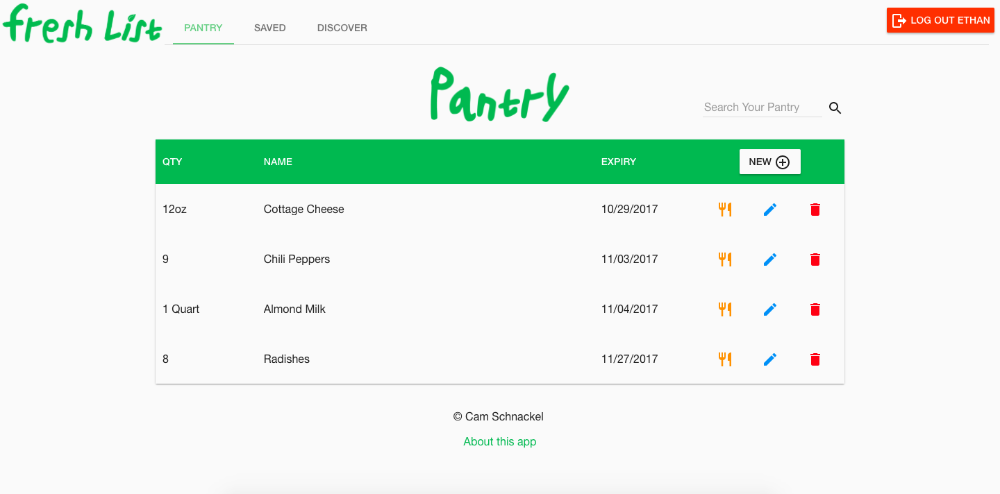
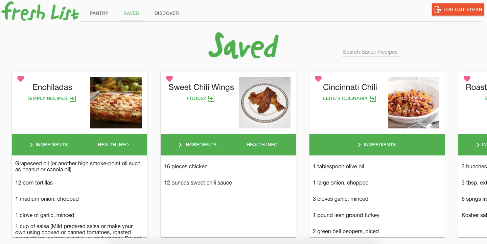

<section ng-include="'views/partials/nav.html'"></section>
<section class="primaryColor section noBotPad">
    <div class="container">
        <h1 class="has-text-centered has-text-left-desktop">projects</h1>
    </div>
</section>
<section class="container section noBotPad">
    <!-- <p>Github Repos - {{pc.user.data.public_repos}} and counting!</p> -->

    <div class="tile is-ancestor" ng-repeat="repo in pc.featRepos">
        <div class="tile is-12 is-parent">
            <div class="tile is-child box">
                <p class="title">{{repo.name}} 
                    <a ng-href="{{repo.url}}" target="_blank" ng-if="repo.url !== undefined">
                        <span class="icon" title="Open app in new tab">
                            <i class="mdi mdi-open-in-new"></i>
                        </span>
                    </a>
                </p>
                <p class="subtitle">{{repo.tech}}</p>
                <div class="content">
                    <div class="columns is-gapless">
                        <div class="column is-half" ng-repeat="filename in repo.images">
                                <figure class="image">
                                    
                                </figure>
                        </div>
                    </div>
                    <p>{{repo.description}}</p>
                </div>
            </div>
        </div>
    </div>

    <!-- <div class="tile is-ancestor">
        <div class="tile is-12 is-parent">
            <div class="tile is-child box">
                <p class="title">FreshList</p>
                <p class="subtitle">MEAN Stack (MongoDB, Express.js, AngularJS, Node.js), HTML5, CSS3, JavaScript, Angular Material, Passport, Edamom
                    Recipe API</p>
                <div class="content">
                    <div class="columns is-gapless">
                        <div class="column is-half">
                            <figure class="image">
                                
                            </figure>
                        </div>
                        <div class="column is-half">
                            <figure class="image">
                                
                            </figure>
                        </div>
                    </div>
                    <p>FreshList is a full-stack and mobile responsive application that was created to rememdy a personal bad habit
                        I had of wasting groceries and not knowing what to cook. It allows the user to intuitively enter and
                        track their grocery items which are sorted by their expiry date. Beside each grocery item in the list,
                        there is a button that when clicked will provide the user with up to 5 recipe suggestions generated through
                        the Edamom Recipe API.</p>
                </div>
            </div>
        </div>
    </div> -->
</section>